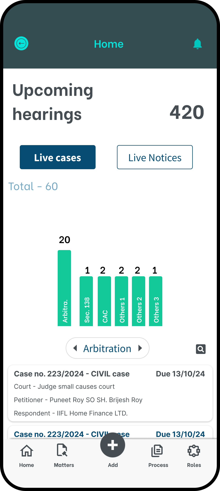
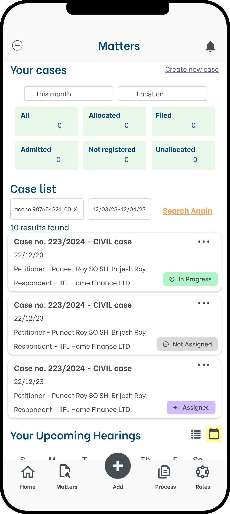
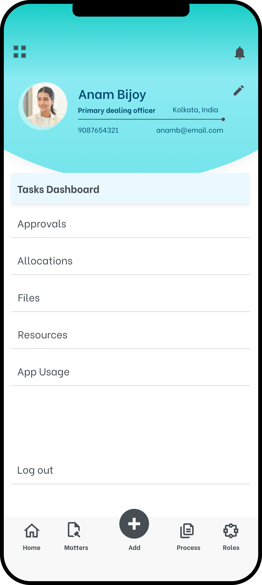

04
Case Study · Legal Tech · Mobile
Legacy Untethered.
A legacy legal management system, redesigned for the field — giving remote teams the power to act decisively on mobile, and the depth to complete on desktop.

A legacy legal management system, redesigned for the field — giving remote teams the power to act decisively on mobile, and the depth to complete on desktop.
The legal management platform had years of depth — case records, document trails, task assignments, compliance logs. But it was built entirely for desktop. Field advocates, remote case managers, and on-site staff were forced to either wait until they returned to the office, or resort to informal tools and handwritten notes to bridge the gap.
The backlog of deferred actions was growing. Decisions that could take seconds were taking days — not because the data wasn't available, but because the interface never thought about where users actually were.
Enable the 80% of daily tasks — assign, flag, approve, comment — to be completed in under 30 seconds on a mobile screen.
Start a case review on your phone during a commute; pick up exactly where you left off on desktop with full context preserved.
Courts, client sites, and transit often mean no reliable signal. Critical views must load and queue actions without connectivity.
The existing desktop interface had decades of feature accumulation. Mobile became the forcing function to surface only what truly mattered.
What we designed, and how the numbers answered back.
Tasks initiated on mobile and completed on desktop are tracked as a single unbroken action — eliminating the "did I finish this?" ambiguity that plagued the old workflow.
Core case views and quick actions are available without connectivity. Actions queue locally and sync the moment a connection is restored — no data lost, no friction added.
Remote users — previously locked out until they returned to the office — became daily active participants in the platform, closing the loop on cases in real time.
Three moments in the mobile journey — from landing to action.



This transformation moved a historically desktop-bound legal workflow into the pockets of the people doing the actual work. Advocates at courthouses, case managers at client sites, and coordinators in transit could now act, assign, and advance cases in real time. The system went from a tool you used when you got back to the office, to a tool that went with you everywhere — and for the first time, the organisation's response time matched its ambition.
Designing for a 390px screen with a thumb-reach constraint is the best editor you will ever have. Every feature that couldn't justify its presence on mobile had no business being prominent on desktop either. The constraint became the design language.
Users had deep muscle memory for the existing system. The challenge wasn't to redesign their workflow — it was to honour the mental model they already had while eliminating the friction they'd grown used to tolerating. The best moments were when users said "this feels familiar but easier."
Tracking blended activity — actions started on one device and finished on another — gave the team a new metric entirely. It changed how success was measured, and gave stakeholders a story that simple adoption numbers couldn't tell. Data design is as important as interface design.
"The best interface is the one that fits in your pocket without you noticing the weight."